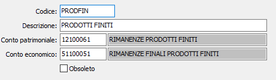

Codici inventario
La tabella consente di codificare e memorizzare le descrizioni dei “gruppi omogenei” per gli inventari. Le procedure di magazzino di OS1 prevedono la stampa analitica delle "valorizzazioni", ovvero dell'inventario analitico di tutti gli articoli. Tuttavia la legislazione consente di redigere (e praticità operativa richiede in presenza di un elevato numero di articoli) inventari sintetici raggruppando in una sola voce più articoli omogenei in termini di qualità e prezzo.
Queste voci vengono definite appunto "codici inventario". I codici inventario, se inserita in ciascuna anagrafica articolo, pur non alterando l'utilizzo dei singoli articoli e la stampa delle valorizzazioni analitiche, consente di ottenere anche inventari sintetici raggruppati appunto per gruppi omogenei.

CODICE: codice alfanumerico di 8 caratteri per identificare il codice inventario in esame. Sul campo sono attive le funzioni di ricerca (F9) sulla tabella stessa.
DESCRIZIONE: campo alfanumerico di 50 caratteri per descrivere il gruppo omogeneo.
CONTO PATRIMONIALE: codice del piano dei conti che sarà utilizzato in fase di contabilizzazione rimanenze.
CONTO ECONOMICO: codice del piano dei conti che sarà utilizzato in fase di contabilizzazione rimanenze.
OBSOLETO: flag attivabile dall’utente per inibire il possibile utilizzo dell’elemento di tabella in esame nelle successive transazioni.